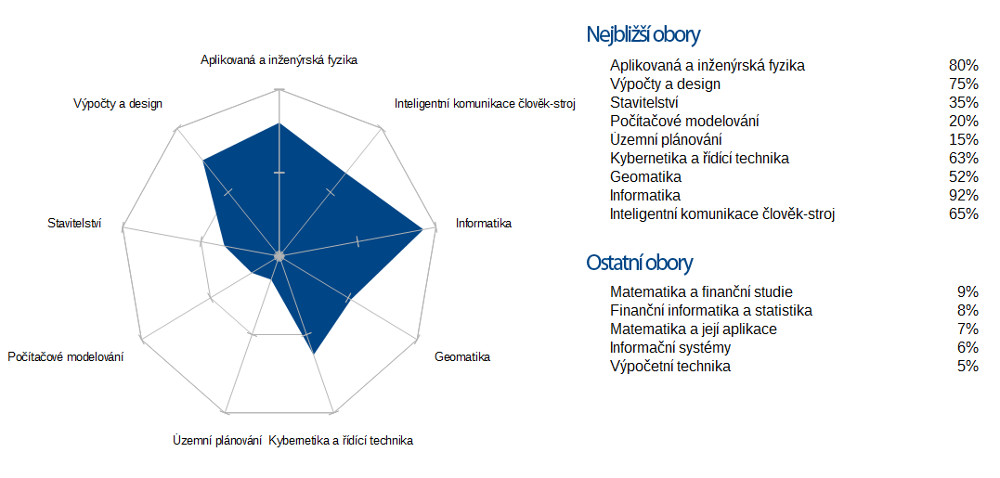

Výběr studijního oboru na FAV
Informace o fakultě, oborech a přijímacím řízení: http://fav.zcu.cz/pro-uchazece/
Informace o studijních programech, oborech a studjiní plány najdete zde: Portál ZČU
Pomocí formuláře níže zadejte oblasti (předměty) a klíčová slova, která se Vám libí a na jejich základě se zobrazí graf se studijními obory, které Fakulta aplikovaných věd (FAV) nabízí.
Pokud nevyberete nic zobrazí se všechny obory.
Forma studia
Typ studia
Vyberte jednu nebo více oblastí, která vás zajímají, ze seznamu (nepovinné):
Můžete vybrat i oblast, kterou nechcete a později ji označit "ne".
Vyberte jednu nebo více oblastí, která vás zajímají, ze seznamu (nepovinné):
Můžete vybrat i oblast, kterou nechcete a později ji označit "ne".
Vybrané oblasti (a klíčová slova, obory, která k nim patří):
Ohodnoťe klíčová slova od 1 do 5, 1 má nejmenší váhu (nechci) a 5 největší (určitě chci). Hodnocení bude mít vliv při výběru vhodných oborů.

|
Matematika | ne spíše ne nevadí mi spíše ano ano |
| Matematika (není hlavní náplní oboru) | ne spíše ne nevadí mi spíše ano ano |
| Finanční matematika | ne spíše ne nevadí mi spíše ano ano |
| Pojistná matematika | ne spíše ne nevadí mi spíše ano ano |
| Statistika a pravděpodobnost | ne spíše ne nevadí mi spíše ano ano |
| Matematická analýza | ne spíše ne nevadí mi spíše ano ano |
| Lineární algebra | ne spíše ne nevadí mi spíše ano ano |
| Diskrétní matematika | ne spíše ne nevadí mi spíše ano ano |
| Numerické metody | ne spíše ne nevadí mi spíše ano ano |
Související obory s oblastí Matematika: |
|
|
|
